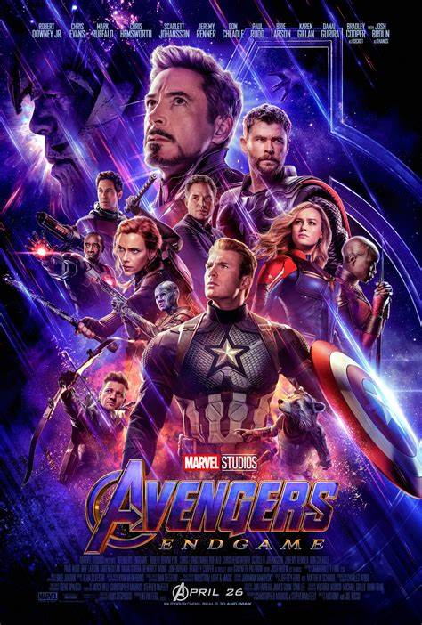

Filmes de terror
Rua do Medo(1994)
.jpeg)
O Chamado 3
.jpeg)
Caso 39
.jpeg)
O Exorcista
.jpeg)
Carie a Estranha
.jpeg)
Filmes de Drama
A Espera de um mílagre
.jpg)
Cinema Paraíso
.jpg)
Central do Brasil
.jpg)
Eu, Daniel Blake
.jpg)
Nomadland
.jpg)
Filmes de Ação
Viúva Negra
.jpg)
Supernatural
.jpg)
Rota de Fuga
.jpg)
John Wick: Capítulo 4
.jpg)
Indiana Jones e a Relíquia do Destino
.jpg)
Series Mais Populares
The Boys
.jpeg)
Peaky Blinders
.jpeg)
Arcane
.jpeg)
Wandinha
.jpeg)
La Casa de Papel
.jpeg)
Filmes de Aventura
Megatubarão
.jpeg)
O Hobbit: Uma Jornada Inesperada
.jpeg)
Missão Impossível
.jpeg)
Maze Runner: A Cura Mortal
.jpeg)
Vingadores: Ultimato
Filmes de Comédia
As Branquelas
.jpeg)
Free Guy - Assumindo o Controle
.jpeg)
Minha Mãe é Uma Peça 3
.jpeg)
Missão Madrinha de Casamento
.jpeg)
O Grande Lebowski
.jpeg)
Filmes de
Comédia Adolescente
Que Horas Eu Te Pego?
.jpg )
Sex Appeal
.jpg)
Honor Society
.jpg)
Fora de Série
.jpg)
Dumplin'
.jpg)
Filmes
Animados
O Rei Leão
.jpeg)
Zootopia
.jpg)
Lilo e Stitch
.jpeg)
Moana
.jpg)
Scooby-Doo
.jpeg)
Documentários
Dahmer - Um Canibal Americano
.jpeg)
Juízo - O maior exige do menor
.jpeg)
Como Se Tornar Um Tirano
.jpeg)
Nosso Planeta
.jpeg)
Johnny Depp x Amber Heard
.jpeg)
Filmes de Suspense
Fratura
.jpeg)
Corra!
.jpg)
Nós
.jpeg)
Bird Box
.jpeg)
Fragmentado
.jpg)
Filmes de
Ficção Científica
Avatar: O Caminho da Água
.jpeg)
Godzilla vs Kong
.jpeg)
Círculo de Fogo: A Revolta
.jpeg)
O Exterminador do Futuro: Gênesis
.jpeg)
Interestelar
.jpeg)
Filmes de Romance
Casablanca
.jpeg)
Love Story - Uma História de Amor
.jpeg)
Adivinhe Quem Vem para Jantar
.jpeg)
Titanic
.jpeg)
Crepúsculo
.jpeg)